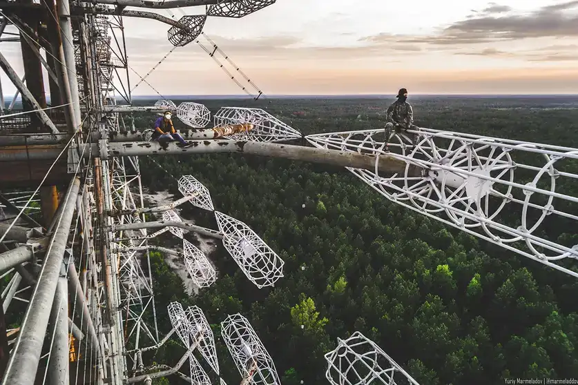
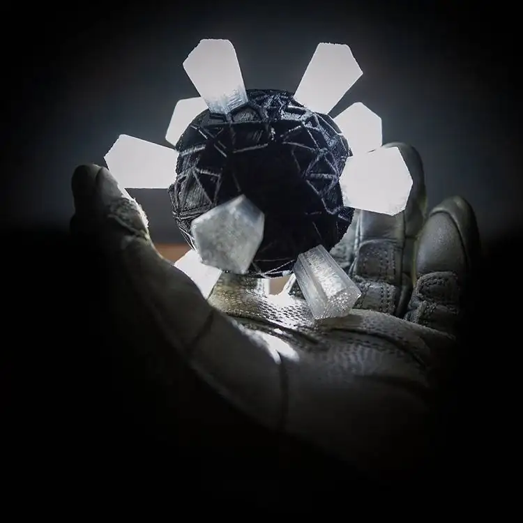
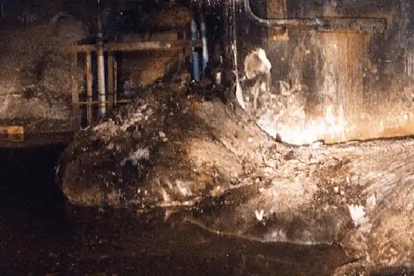

Activities

People climbing Duga radar
Duga
Duga (Russian: Дуга, lit. 'arc' or 'curve') was an over-the-horizon radar (OTH) system used in the Soviet Union as part of its early-warning radar network for missile defence. It operated from July 1976 to December 1989. Two operational Duga radars were deployed, with one near Chernobyl and Liubech in the Ukrainian SSR, and the other in eastern Siberia.
Now you too can experience the thrill of climbing this massive structure!

The red forest through the lens of The Unseen
The Red Forest
The Red Forest (Ukrainian: Рудий ліс, romanized: Rudyi lis; Russian: Рыжий лес, romanized: Ryzhiy les) is the ten-square-kilometre (4 sq mi) area surrounding the Chernobyl Nuclear Power Plant within the Exclusion Zone, located in Polesia. The name "Red Forest" comes from the ginger-brown colour of the pine trees after they died following the absorption of high levels of ionizing radiation as a consequence of the Chernobyl nuclear disaster on 26 April 1986. The site remains one of the most contaminated areas in the world today.
Come explore the Red Forest and witness the haunting beauty of this contaminated landscape!
Rendition of a Mutant chimera
A guided safari
into the outskirts of Jupiter or Zaton. Why settle for mystery meat in a tin when you can hunt the ultimate predator? Our guides will lead you to a Chimera lair. You provide the ammunition; we provide the seasoning.
If the Chimera hunts you instead, the Babushka will still cook—but the menu will be 'Tourist’s Delight' as per tradition!

Picture of a weird glowing rock
Found a weird glowing rock?
Bring it to the lobby! Our resident expert (who has three thumbs and a PhD in 'Zone Physics') will appraise your findings. Is it a priceless 'Mama’s Beads' artifact, or just a highly radioactive piece of a floor tile? We’ll let you know before the radiation sickness sets in.
Good hunting stalker!

Elephants foot
Get up close and personal
with the world's most famous pile of corium! Experience the ultimate in heavy-metal photography. Note: Cameras may experience slight 'digital noise' and users may experience slight 'total organ failure.' A lead apron is provided (rental fee: 50 Rubles).